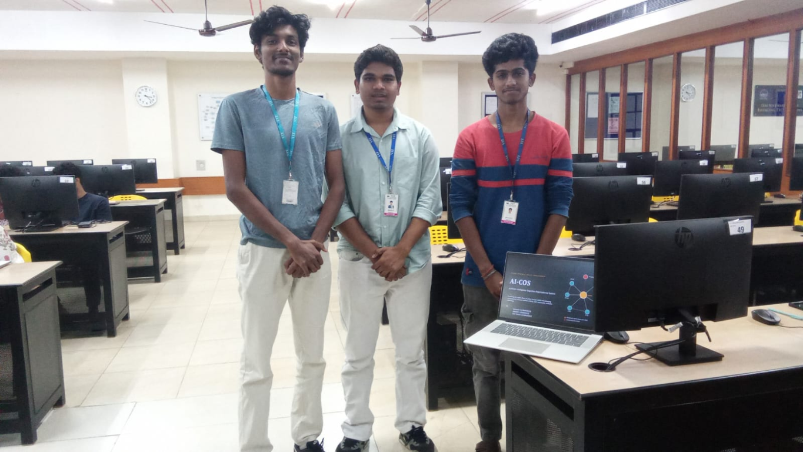
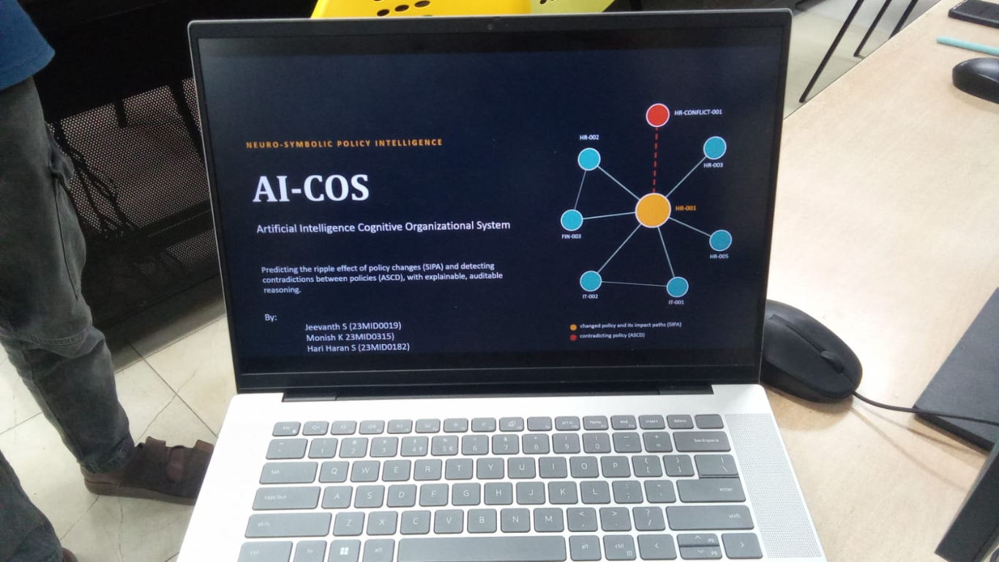
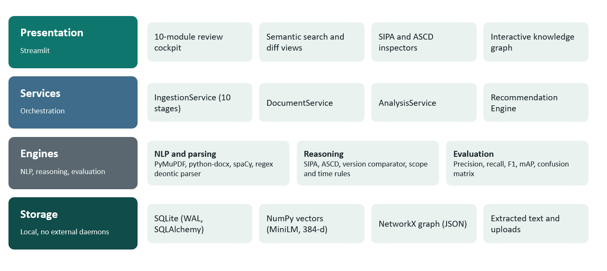
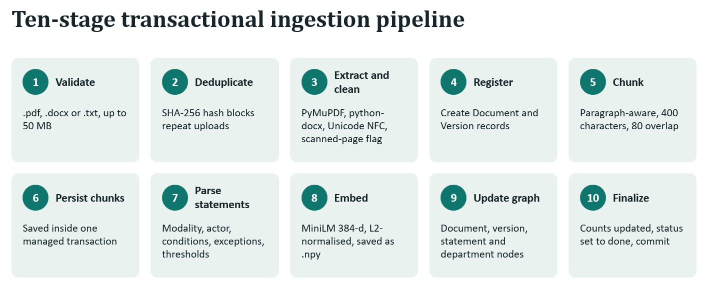
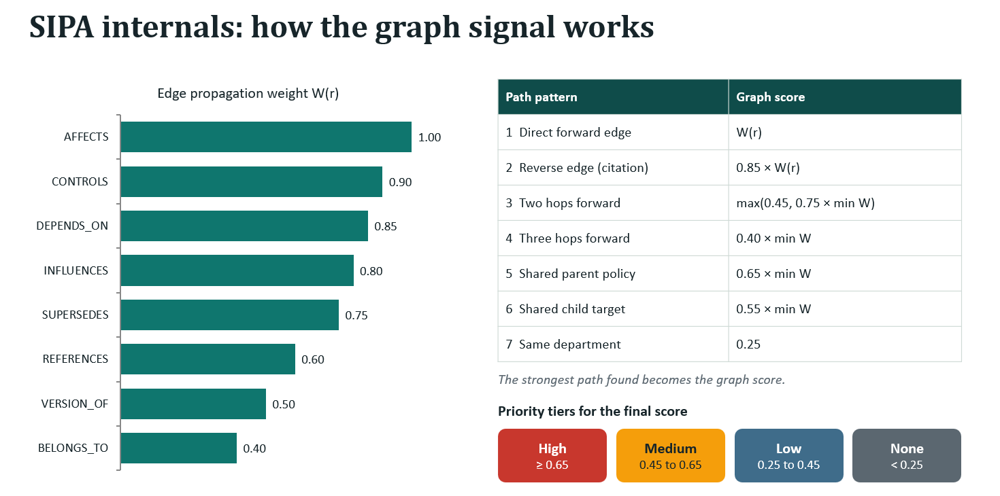

AI-COS
COMPLETE PROJECT WRITEUP
All ten required sections
1. Title
AI-COS: Artificial Intelligence Cognitive Organizational System for Semantic Policy Impact Analysis and Conflict Detection
AI-COS is an intelligent, neuro-symbolic policy intelligence system designed to automate the analysis, comparison and management of organisational policy documents. It uses natural language processing, semantic embeddings, knowledge graphs and rule-based reasoning to identify policy changes, predict their potential impact on related documents and detect contradictory policy statements.
The platform combines SIPA (Semantic Impact Propagation Algorithm) and ASCD (Adaptive Semantic Conflict Detection) in an interactive dashboard where users upload documents, compare versions, analyse policy relationships, inspect conflicts and review corrective recommendations.


2. Motivation
Organisations maintain large collections of policies describing procedures, responsibilities, permissions, restrictions and regulatory requirements. These documents change frequently as organisations evolve, regulations are updated and operational requirements are revised.
Manual management creates three risks: reviewers may miss documents affected by a change; different departments may maintain incompatible rules; and a simple alert may not explain why a policy was flagged. A change from three remote-work days to two, for example, may require review of attendance policies, departmental guidelines and employee procedures.
AI-COS reduces this manual effort, improves organisational consistency, supports explainable analysis and keeps a human reviewer in control.
3. Existing gap / event that motivated the project
Existing system
Traditional approaches rely on manual storage, keyword search, manual version comparison, independent departmental maintenance and human investigation of contradictions. They store documents but do not inherently understand semantic meaning or trace relationships between rules.
Technical gaps
- Semantic understanding: differently worded statements can express the same meaning.
- Automated impact propagation: repositories do not systematically trace dependencies after a modification.
- Contradiction detection: keywords cannot reliably identify incompatible permissions, obligations or thresholds.
- Explainable recommendations: alerts rarely provide evidence or a next action.
- Integrated intelligence: ingestion, comparison, graph analysis, conflict detection and review are often separate activities.
Proposed solution
AI-COS integrates ingestion and versioning, statement extraction, embeddings, a policy graph, semantic comparison, SIPA impact analysis, ASCD conflict detection, deterministic recommendations and human review. The supplied documentation does not identify one specific external incident or organisation as the historical trigger; the motivation is the general operational gap in managing interconnected policies.
4. Architecture
The modular architecture passes each output to the next layer:

5. Complete tech stack information
| Technology | Category | Purpose |
|---|---|---|
| Python | Programming | Backend processing and analytical logic |
| Streamlit | Frontend / UI | Interactive dashboard and review interface |
| PyMuPDF | Document processing | PDF text extraction |
| python-docx | Document processing | DOCX paragraphs and tables |
| Regex | Text processing | Modalities, conditions and thresholds |
| spaCy | NLP | Sentence processing and named entities |
| Sentence Transformers | Semantic NLP | Policy embeddings |
| all-MiniLM-L6-v2 | Embedding model | 384-dimensional vectors |
| NumPy / scikit-learn | Numerical utilities | Normalisation, storage and similarity support |
| NetworkX / Neo4j | Graph processing | Policy relationships and graph analysis |
| SQLite / SQLAlchemy | Persistence | Metadata, versions, statements and findings |
| JSON | Serialisation | Graph and interchange data |
| Plotly | Visualisation | Interactive graphs and analytical plots |
| pytest | Testing | Unit and integration evaluation |
Documented parameters: PDF, DOCX and TXT support; 50 MB maximum file size; approximately 400-character chunks with 80-character overlap; SHA-256 deduplication; SQLite storage; local NumPy and JSON persistence. The design is intended to run locally without requiring a cloud LLM API or separate database server. FAISS or Qdrant may support vector retrieval in the broader design.
6. Datasets used
AI-COS uses organisational policy documents rather than an image, audio or conventional tabular machine-learning dataset. Inputs contain policy statements, rules, conditions, permissions, obligations, restrictions and numerical thresholds.
SIPA data
- Source documents and old/new versions
- Extracted policy statements
- Document and department metadata
- Knowledge graph relationships
- Labelled or expected affected documents for benchmark scenarios
ASCD data
- Structured statement pairs
- Actors, modalities, actions and objects
- Conditions, exceptions and thresholds
- Semantic embeddings
- Labelled conflict and non-conflict examples
Evaluation and limitation: the supplied documentation reports synthetic scenarios: ASCD has 2 true positives, 1 true negative, 0 false positives and 0 false negatives across three cases, or 100% reported accuracy. SIPA also reports perfect synthetic benchmark results. These results must not be presented as equivalent performance on a large real-world collection. No public external dataset name, URL, licence or complete dataset size is established; uploaded documents are application inputs, not automatically a public training dataset.
7. Prompts used for construction of the website
The supplied writeup describes these as representative development prompts, not a verified historical transcript. They are included transparently as the intended AI-assisted construction brief.
Design a modular Python AI-COS application for document ingestion, NLP extraction, embeddings, graph construction, impact analysis and conflict detection.
Create a professional dashboard with overview, document library, ingestion, semantic search, version comparison, impact, conflict, graph, evaluation and review screens.
Support PDF, DOCX and TXT; validate extensions and size, detect SHA-256 duplicates and show processing status.
Use PyMuPDF and python-docx for extraction with cleaning, Unicode normalisation, whitespace handling and paragraph-aware chunking.
Build a rule-based parser for actors, deontic modalities, actions, objects, conditions, exceptions and numerical thresholds across obligations, permissions, prohibitions, recommendations and facts.
Integrate all-MiniLM-L6-v2, generate normalised 384-dimensional vectors, calculate cosine similarity and persist embeddings with NumPy.
Use NetworkX for documents, versions, statements and departments with AFFECTS, CONTROLS, DEPENDS_ON, INFLUENCES, SUPERSEDES, REFERENCES, VERSION_OF and BELONGS_TO_DEPARTMENT relationships.
Combine graph topology, semantic similarity, organisational scope and change severity into impact scores with evidence and priorities.
Generate semantic candidate pairs and use symbolic reasoning for actors, opposing actions, target overlap, temporal compatibility, numerical disparity, modality conflicts and false-positive filtering.
Map impact and conflict classifications to deterministic corrective actions with finding type and supporting evidence.
Implement a Streamlit review interface to inspect evidence, confirm or dismiss findings and record decisions and timestamps.
Create an interactive NetworkX and Plotly relationship visualisation with labelled edges and inspectable document connections.
Develop pytest coverage for ingestion, extraction, parsing, embeddings, graph construction, SIPA, ASCD, persistence and application functionality.
8. NLP pipeline
The pipeline converts unstructured policy language into machine-readable evidence using traditional NLP, regex, semantic embeddings and symbolic reasoning.
- Document extraction: PyMuPDF, python-docx and Python text readers process PDF, DOCX and TXT.
- Cleaning and normalisation: Unicode, whitespace and invisible-character cleanup produces consistent text and flags pages with insufficient extractable content.
- Sentence and paragraph processing: spaCy identifies manageable sentences, segments and relevant entities.
- Semantic chunking: paragraph-aware chunks use approximately 400 characters and 80-character overlap.
- Deontic parsing: regex identifies prohibition, obligation, permission, recommendation and factual modalities, producing
Statement = (A, M, Ac, O, C, E, T). - Embedding generation: all-MiniLM-L6-v2 converts policy units into normalised 384-dimensional vectors;
cosine(A,B) = (A · B) / (||A|| × ||B||). - Graph construction: NetworkX connects documents, versions, statements and departments.
- Version comparison: semantic alignment identifies modality, limit, scope, condition, wording and substantive changes.
- SIPA:
I = 0.35G + 0.30S + 0.20C + 0.15Vcombines graph, semantic, scope and severity scores. - ASCD: semantic candidates are tested for symbolic conflict features and false positives.
- Recommendations and review: findings become corrective actions for human confirmation.

9. Users, inputs and outputs
Intended users
Policy administrators manage documents, versions and processing. Compliance officers investigate inconsistencies and monitor policy changes. Department managers examine affected guidelines and outdated procedures. Policy reviewers and auditors validate evidence, confirm or dismiss findings and maintain review records. The documentation does not establish a separately implemented role-based access-control system for these categories.
Inputs
- Files: PDF, DOCX and TXT, with a documented maximum of 50 MB.
- Metadata: title, identifier, department, version, category and related-document information.
- Structured statements: internally extracted actors, modalities, actions, objects, conditions, exceptions and thresholds.
- Version comparison: earlier and newer document versions.
- SIPA: changed statements, target documents, embeddings, graph relationships, scope and severity.
- ASCD: statement embeddings, actor/action information, conditions, exceptions, temporal information and thresholds.
- Review: confirmation or dismissal decisions and notes where supported.
Outputs
| Output | Contents |
|---|---|
| Processing | Validation, duplicate status, extracted text, chunk count, statement count, embedding information and status |
| Policy statements | Actor, modality, action, object, condition and threshold, such as permission to work remotely two days per week with approval |
| Version report | Old/new statement, change type and classification such as a limit change from three to two days |
| SIPA impact | Affected documents, score, priority, graph evidence, semantic evidence, scope and severity |
| ASCD conflict | Candidate pair, source and related statements, classification, severity and symbolic evidence |
| Recommendations | Review affected policy, align thresholds, update cross-references, resolve requirements or review conditions |
| Review results | Reviewer decision, finding status, timestamp and review information |
| Dashboard | Overview metrics, document library, version history, semantic search, analyses, graph, evaluation and review interface |
SIPA priority thresholds: 0.65 and above High; 0.45–0.6499 Medium; 0.25–0.4499 Low; below 0.25 None.

10. References
- AI-COS Project Analysis, PROJECT_ANALYSIS.md.
- AI-COS Overview, AI-COS_Overview.pptx.
- Reimers & Gurevych (2019), “Sentence-BERT: Sentence Embeddings using Siamese BERT-Networks.” arxiv.org/abs/1908.10084
- Sentence Transformers Documentation and all-MiniLM-L6-v2 model documentation.
- spaCy, PyMuPDF and python-docx documentation.
- NetworkX, NumPy, SQLite and SQLAlchemy documentation.
- Streamlit, Plotly and pytest documentation.
- Cosine similarity, Jaccard similarity, Fawcett (2006), “An introduction to ROC analysis,” Pattern Recognition Letters, 27(8), 861–874, and Sokolova & Lapalme (2009), “A systematic analysis of performance measures for classification tasks,” Information Processing & Management, 45(4), 427–437.
The mathematical-method references provide technical background; they are not claims that a specific external paper was used during implementation.